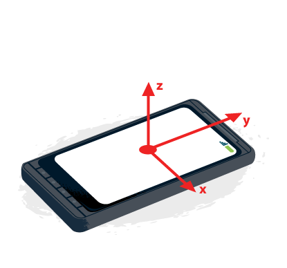

Device Access & Integration
Device Orientation
Device motion and orientation events provide access to the built in accelerometer, gyroscope and compass in mobile devices.
Device motion and orientation events provide access to the built in accelerometer, gyroscope and compass in mobile devices.
These events can be used in for many purposes; for example in gaming to control the direction of character, or to determine how high a character should jump. When used with GeoLocation, it can create a more accurate turn-by-turn navigation system or provide information about where a store is.
Warning
In order to use the data returned by the device orientation and motion events, it is important to understand the values provided.
The Earth coordinate frame, described by the values X, Y and Z, are aligned
based on gravity and standard magnetic orientation.
The device coordinate frame described by the values x, y and z are aligned
based on the center of the device.

On a phone or tablet, the orientation of the device is based on the typical orientation of the screen. For phones and tablets, it is based on the device being in portrait mode. For desktop or laptop computers, the orientation is considered in relation to the keyboard.
Rotation data is returned as a Euler angle, representing the number of degrees of difference between the device’s coordinate frame and the Earth coordinate frame.
Except as otherwise noted, the content of this page is licensed under the Creative Commons Attribution 3.0 License, and code samples are licensed under the Apache 2.0 License. For details, see our Site Policies.